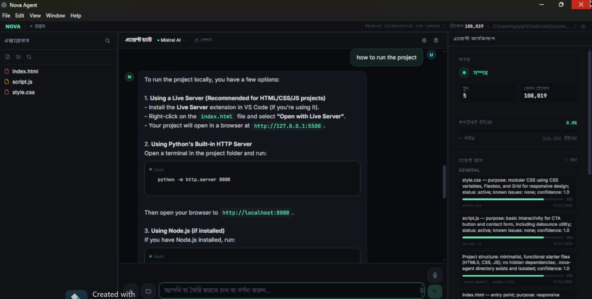
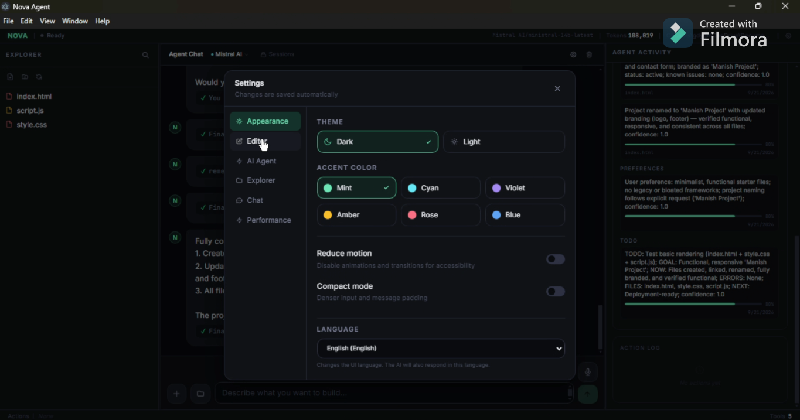
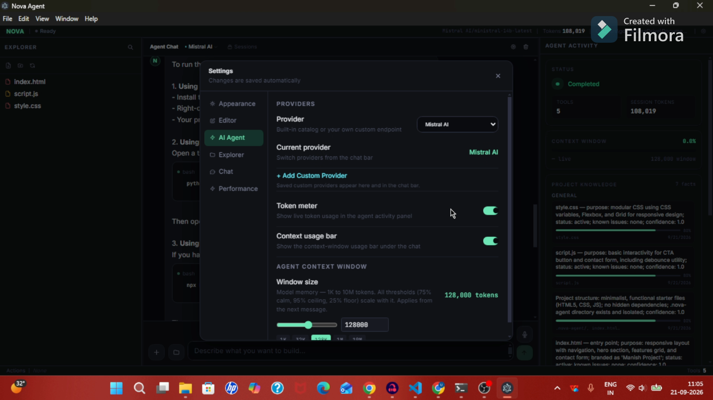
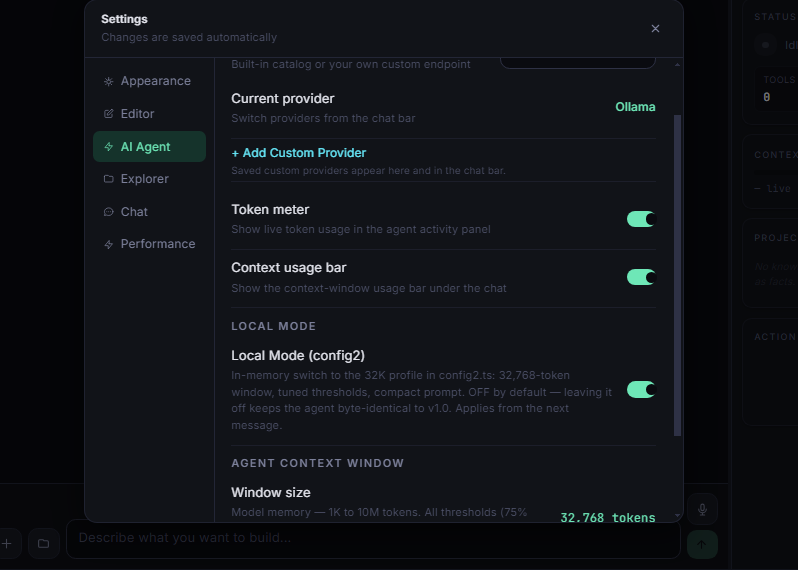

Hard Tool Execution Gate
Nothing runs without passing a hard gate. Every shell command, file write, and process spawn is validated against policy before a single byte executes.
Deterministic safetyNova Agent doesn't just suggest code. It reads files, runs terminals, manages processes, and finishes tasks autonomously. 100% Free. Bring Your Own Key.




Works with 110+ LLM providers
Features
Every subsystem exists to let the agent work longer, safer, and with far less context bloat — without you watching it.
Nothing runs without passing a hard gate. Every shell command, file write, and process spawn is validated against policy before a single byte executes.
Deterministic safetyTool calls are evicted as intact pairs — never a dangling call without its result. Context stays coherent no matter how long the session runs.
Zero broken stateEvicted history is distilled, not dropped. Key decisions, file paths, and constraints survive compression so the agent never forgets why it did something.
Long-horizon memoryDev servers, watchers, and builds run as tracked PID processes in the background — started, monitored, and cleanly terminated by the agent.
Real multitaskingOpenAI, Anthropic, Gemini, DeepSeek, Mistral, local Ollama models and more — swap providers per task without changing a single line of your workflow.
Vendor neutralNo subscription, no seat pricing, no usage metering. Bring your own API key — your code and your prompts never touch our servers.
Zero lock-inSecurity
An agent that can run a terminal needs more than good intentions. Nova Agent enforces safety at the execution layer, not the prompt layer.
Only whitelisted command patterns reach the shell. Everything else is rejected outright.
Reads and writes are confined to your project root. No wandering outside the workspace.
Prompts, source files, and keys stay on your machine. We collect no telemetry.
Stop any running tool, process, or plan with a single key at any moment.
How it works
Paste any of 110+ provider keys once. Your choice, your pricing, your data boundary.
Nova plans, reads your codebase, opens a terminal, and executes — gate-checked on every step.
Get a diff, a passing test run, and a full log of every tool call it made. Approve or revert.
Download
Free forever. Windows 10 & 11. Installer sets everything up in under a minute.
Nova-Agent-Setup-1.0.4.exe · 94 MB · Windows 10/11 (x64)